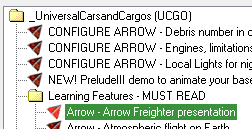
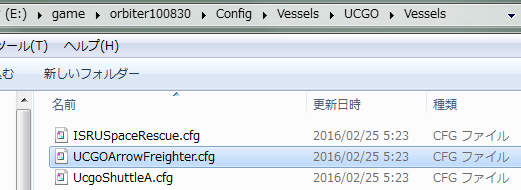

Arrow Freighterのダウンロードと設定
Arrow Freighterは、地球から木星・土星までの長距離航行が可能な星間貨物船です。
UCGO+UMMUの車両・人員・貨物を搭載することができます。
ダウンロード・インストール
ダウンロード
UCGO 3.0 + UMmu 3.0 - 2014 edition
Arrow FreighterはUCGO+UMMU MODに付属しています。
インストールについては以下のページを参照してください。
UMMU+UCGOのダウンロード・インストール
インストールが終わったら、Arrow - Arrow Freighter presentation
シナリオを実行して、正常に表示されるか確認してください。

設定の変更
以下のcfgファイルをメモ帳などのテキストエディタで開くと、Arrow Freighterの設定を変更できます。
Config\Vessels\UCGO\Vessels\UCGOArrowFreighter.cfg

初期設定だと月などの重力の弱い星からしか離陸できないので、必要に応じてホバーエンジンの設定を変更します。
- 初期設定
HOVER_THRUST_POWER =10e6 - 火星から離陸可能
HOVER_THRUST_POWER =30e6 - 地球から離陸可能
HOVER_THRUST_POWER =60e6
ブリッジと船室
3DコクピットでCtrl + 矢印キーを押すと、ブリッジと船室を移動できます。
Ctrl + Alt + 矢印キーで、ブリッジ・船室の窓の近くへ移動します。